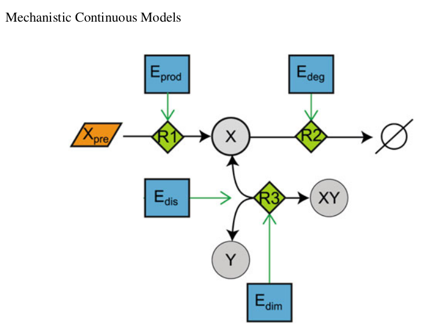

Del diagrama a las ecuaciones, y de las ecuaciones a la simulación
Un recorrido guiado por los 8 pasos fundamentales para construir, analizar y validar un modelo mecanístico de EDOs no lineales aplicado a una red de señalización biológica.
Representaciones Visuales de Redes de Reacción
¿Qué estamos haciendo?
Antes de escribir una sola línea de matemáticas, necesitamos entender la biología. Observamos un modelo de juguete que representa una red de reacciones donde una proteína $X$ se produce, se degrada y se une a una proteína $Y$ para formar un dímero $XY$.

Interpretación Biológica
- Sustrato $X_{pre}$: material de partida disponible para producir la proteína $X$.
- Proteína $X$: se produce ($R1$) y se degrada ($R2$). Su concentración depende del balance entre ambas.
- Proteína $Y$: se une a $X$ para formar el dímero $XY$.
- Dímero $XY$: producto de la unión de $X$ e $Y$. Puede disociarse ($R3-$) y volver a sus componentes.
- Moduladores (cuadros azules): $E_{prod}$, $E_{deg}$, $E_{dim}$ y $E_{dis}$ actúan como "perillas" enzimáticas que aceleran o frenan las reacciones (rombos verdes $R1$, $R2$, $R3$).
Representación Matemática del Sistema
¿Qué estamos haciendo?
Traducimos el diagrama de la red a un lenguaje que las computadoras entiendan: Ecuaciones Diferenciales Ordinarias (EDOs).
Ley de Acción de Masas
La tasa de cambio de cada especie es igual a la suma de sus reacciones de formación menos las de consumo. Aplicando esto a $X$, $Y$ y $XY$ obtenemos:
Interpretación Matemática
Fíjate en los signos. Cada término positivo representa una flecha que entra al nodo, y cada término negativo una flecha que sale. La constante $k$ indica la velocidad intrínseca de la reacción, y $E$ indica la modulación externa.
Simplificación del Modelo: Ecuaciones de Conservación
¿Qué estamos haciendo?
En biología muchas moléculas no se destruyen, solo cambian de estado. El sistema original tiene 3 ecuaciones ($X$, $Y$, $XY$), pero podemos reducirlo a 2 usando una ley de conservación. Menos ecuaciones significa computación más rápida y menos errores numéricos.
Derivación de la Conservación
La cantidad total de proteína $Y$ es constante: existe como $Y$ libre o unida al dímero $XY$. Por lo tanto:
Sustituyendo $XY(t) = Y_T - Y(t)$ en las ecuaciones originales, reducimos el sistema de 3D a 2D:
Identificación de Condiciones Iniciales y Parámetros
¿Qué estamos haciendo?
Para que un modelo funcione necesitamos darle un punto de partida (condiciones iniciales) y definir las reglas de velocidad (parámetros).
Interpretación Biológica y Matemática
- Condiciones iniciales ($X_0, Y_0$): ¿cuánta proteína $X$ y $Y$ hay en $t=0$? Matemáticamente: $X(0)=X_0$, $Y(0)=Y_0$.
- Parámetros ($k$ y $E$): valores numéricos que definen qué tan rápido ocurren las reacciones. En un experimento real, se miden o estiman. Por ejemplo, $k_{prod}$ es la tasa base de producción, mientras que $E_{prod}$ es el nivel de modulación (ej. presencia de un factor de transcripción).
Valores actuales del sistema
Comportamiento de Equilibrio: Estado Estacionario
¿Qué estamos haciendo?
Buscamos el "destino final" del sistema. El estado estacionario ocurre cuando el sistema se estabiliza y las concentraciones ya no cambian con el tiempo.
Derivación analítica
Igualamos las derivadas a cero: $\frac{dX}{dt}=0$ y $\frac{dY}{dt}=0$. Resolviendo el álgebra:
Simulación Dinámica del Sistema de EDOs
¿Qué estamos haciendo?
El estado estacionario nos dice a dónde vamos, pero la simulación dinámica nos dice cómo llegamos allí. Resolvemos las EDOs numéricamente usando el método Runge-Kutta de 4to orden (RK4).
Interpretación Computacional
La computadora divide el tiempo en pequeños pasos y calcula cómo cambian $X$, $Y$ y $XY$ en cada paso. Esto genera las curvas de concentración vs tiempo.
donde cada $k_i$ es una evaluación de la función derivada en puntos estratégicos del intervalo.
Optimización de Parámetros
¿Qué estamos haciendo?
En la vida real no conocemos los valores exactos de $k_{prod}$ o $k_{deg}$. Lo que tenemos son datos experimentales (puntos rojos con ruido). La optimización busca los parámetros que hacen que nuestro modelo se ajuste mejor a esos datos.
Interpretación Matemática
Definimos una función de costo: el Error Cuadrático (SSE), que mide la distancia entre los datos experimentales y la predicción del modelo:
Objetivo: $\displaystyle \min_{k_{prod}} SSE$
En este tutorial simulamos ese proceso manualmente: los datos fueron generados con $k_{prod}=2.0$ más ruido gaussiano. Tu trabajo es encontrar el valor óptimo moviendo el slider.
Análisis del Modelo: Robustez / Plasticidad
¿Qué estamos haciendo?
Un modelo no sirve de mucho si solo funciona en condiciones perfectas. El análisis de robustez evalúa qué tan sensible es el sistema a perturbaciones externas.
Interpretación Biológica y Matemática
Si una célula muta y produce más enzima $E_{prod}$, ¿el sistema colapsa o se adapta? La robustez mide la capacidad del sistema para mantener su función frente a cambios. Matemáticamente evaluamos cómo cambia el estado estacionario $X^*$ cuando perturbamos un parámetro $p$:
Un valor de sensibilidad cercano a 1 indica una respuesta proporcional; cercano a 0 indica un sistema robusto.